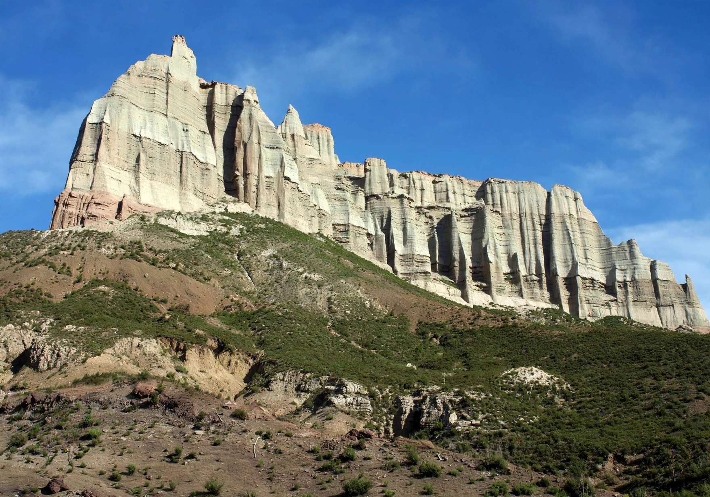
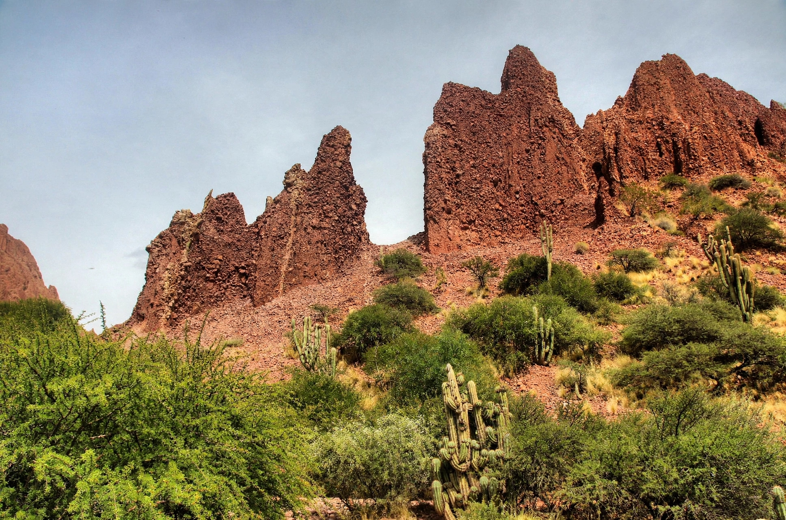

Descubre Tupiza
Un destino de paisajes rojizos, montañas y aventura
Destinos para descubrir
Tupiza se encuentra en el departamento de Potosí, en un valle caracterizado por sus cerros colorados, formaciones rocosas y paisajes naturales.

Quebrada de Palala
Impresionantes formaciones rocosas rojizas.

El Sillar
Singulares formaciones rocosas.

Puerta del Diablo
Formación natural de roca con apariencia de gran entrada.